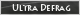

Wofür sind diese Bilder gedacht?
Diese Bilder sind für dich um auf die UltraDefrag Webseite von anderen Webseiten, Foren, Blogs, etc. zu verweisen.
Du kannst die Bilder natürlich herunterladen und auf deinem Server speichern.
Logo 1 : 162x25 Pixel | 2.16 KB

Kode:
<a href="http://ultradefrag.sourceforge.net"><img src="http://ultradefrag.sourceforge.net/ext_image/link_d.gif" border=0 alt="Open Source Defragmentierungswerkzeug"></a>
Logo 2 : 80x15 Pixel | 2 KB

Kode:
<a href="http://ultradefrag.sourceforge.net"><img src="http://ultradefrag.sourceforge.net/ext_image/link_a.gif" border=0 alt="Open Source Defragmentierungswerkzeug"></a>
Logo 3 : 80x15 Pixel | 1.2 KB
Kode:
<a href="http://ultradefrag.sourceforge.net"><img src="http://ultradefrag.sourceforge.net/ext_image/link_b.gif" border=0 alt="Open Source Defragmentierungswerkzeug"></a>
Logo 4 : 124x31 Pixel | 4.09 KB

Kode:
<a href="http://ultradefrag.sourceforge.net"><img src="http://ultradefrag.sourceforge.net/ext_image/link_c.gif" border=0 alt="Open Source Defragmentierungswerkzeug"></a>